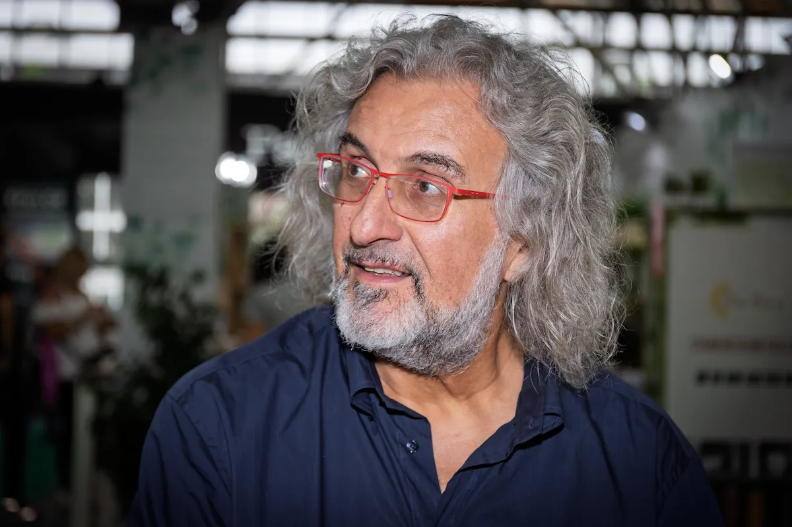

Ci sono persone che non occupano solo uno spazio fisico ma definiscono l'architettura invisibile di un progetto. Alessandro era una di queste.
Ho conosciuto Alessandro nel 2007, in occasione della fiera SANA a Bologna. All'epoca era il mio interlocutore per ICEA, il committente. Quello che era iniziato come un rapporto professionale si è trasformato, anni dopo, in una delle collaborazioni più fertili, sincere e rispettose della mia carriera.

Insieme abbiamo creato alcune delle mie migliori architetture temporanee. Strutture a volte semplici, a volte estremamente complesse, ma sempre nate da un'intesa rara: ci siamo sempre capiti e rispettati, anche nei momenti più tumultuosi e frenetici che precedono l'apertura di una fiera.
"Grazie al suo supporto incrollabile, i clienti hanno accettato allestimenti non convenzionali e azzardati, sempre guidati da un'etica profonda."
La nostra bussola è sempre stata la sostenibilità e il benessere degli animali; per anni abbiamo ospitato con orgoglio una sezione della LAV. Ma il lato professionale era solo la cornice: Alessandro organizzava pranzi e cene che erano veri e propri simposi, momenti densi di vita, scambi di idee e visioni sul futuro.
E poi c'era il suo rito personale. Quando la manifestazione finalmente cominciava e la tensione si scioglieva, Alessandro sbucava dal suo "sgabuzzino" con le immancabili tenerine alla zucca e al cioccolato. Un gesto semplice che sapeva di casa, di cura e di amicizia.
È una coincidenza? Forse. Ma resta il fatto che, dopo la scomparsa di Alessandro, la fiera del SANA a Bologna ha chiuso i battenti per sempre. Come se quell'architettura non potesse più reggersi senza uno dei suoi pilastri più umani.
Ci mancherai tantissimo.